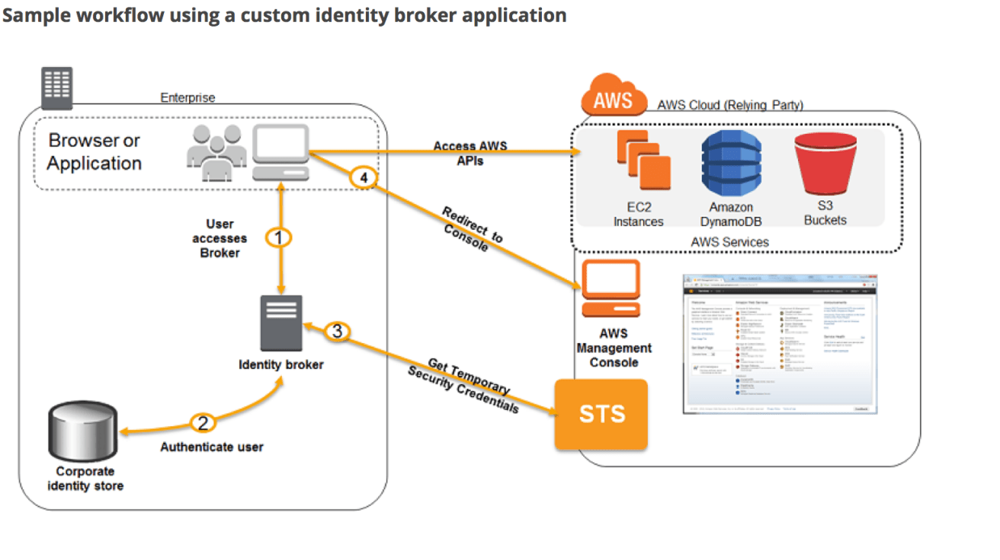

Test Report
Review questions
Jun 17, 2019 12:42AM EDT
 8 correct
8 correct 46 incorrect
46 incorrectYour answer
B. Migrate the database to Amazon Aurora MySQL. Use Amazon CloudWatch Events to schedule AWS Lambda functions that add read replicas for month-end reporting and remove them afterward.
C. Migrate the Java/Tomcat servers to AWS Elastic Beanstalk.
D. Migrate the Java/Tomcat servers to Amazon EC2 instances behind an ELB Application Load Balancer. Configure an EC2 Auto Scaling group for the instances.
E. Migrate the database to Amazon RDS for MySQL with Auto Scaling for the read replicas.
C. Migrate the Java/Tomcat servers to AWS Elastic Beanstalk.
Correct answers are B & C
Option B as Aurora MySQL will support MySQL without any code changes and Auto Auto Scaling Read replicas can help cut costs.
To meet your connectivity and workload requirements, Aurora Auto Scaling dynamically adjusts the number of Aurora Replicas provisioned for an Aurora DB cluster. Aurora Auto Scaling is available for both Aurora MySQL and Aurora PostgreSQL. Aurora Auto Scaling enables your Aurora DB cluster to handle sudden increases in connectivity or workload. When the connectivity or workload decreases, Aurora Auto Scaling removes unnecessary Aurora Replicas so that you don't pay for unused provisioned DB instances.
You define and apply a scaling policy to an Aurora DB cluster. The scaling policy defines the minimum and maximum number of Aurora Replicas that Aurora Auto Scaling can manage. Based on the policy, Aurora Auto Scaling adjusts the number of Aurora Replicas up or down in response to actual workloads, determined by using Amazon CloudWatch metrics and target values.
Option C as Elastic Beanstalk with help deploy applications on Java/Tomcat with minimal Platform Management.
Option A is wrong as Multi-AZ provides High Availability. Standby cannot be used for reporting.
Option D is wrong as hosting on ELB with Auto Scaling with EC2 instance would need platform management.
Option E is wrong as RDS MySQL does not provide read replica Auto Scaling.
Your answer
B. Embed a certificate into the Amazon Machine Image that is used by the Auto Scaling group Have the launched instances generate a certificate signature request with the instance’s assigned instance-id to the Key management service for signature.
C. Configure the Auto Scaling group to send an SNS notification of the launch of a new instance to the trusted key management service. Have the Key management service generate a signed certificate and send it directly to the newly launched instance.
D. Configure the launched instances to generate a new certificate upon first boot Have the Key management service poll the Auto Scaling group for associated instances and send new instances a certificate signature that contains the specific instance-id.
Correct answer is C as certificate must be signed by the customers key management service and this is the only option. Using S3 won't have it unique, embedding in AMI wont make it unique, Generating a new certificate by itself would defeat the requirement of getting it signed by customers key management service.
Option A is wrong as Accessing from S3 was fine but how can the file be unique when every time autoscaling generates different instances and instance-id.. Thats not predictable
Option B is wrong as Embedding a certificate in AMI cannot make the certificate unique.
Option D is wrong as As the EC2 instances must generate unique X.509 certificate and this must be specific to the instance id. The EC2 instance can generate the certificate itself BUT it is clearly mentioned that the certificate must be signed by the customers key management service and not self signed.
AWS SAP-C01 Question feedbackYour answer
B. Parse security groups in each Availability Zone and region.
C. Evaluate VPC network access control lists.
D. Evaluate AWS CloudTrail logs.
E. Evaluate Elastic Load Balancing access control lists.
F. Parse CloudFront access control lists.
C. Evaluate VPC network access control lists.
Correct answer are A & C as the command describe-security-groups would return results for a single region it needs to be execute for each region. Also, for network rules the NACLs should also be checked.
Refer AWS documentation - describe-security-groups
Option B is wrong as the command describe-security-groups returns security groups for entire region.
Option D is wrong as CloudTrail logs provide access audit logs.
Option E is wrong as ELB ACLs do not exist.
Option F is wrong as CloudFront ACLs are different than the EC2 network rules.
Your answer
B. Create a new CloudTrail with one new S3 bucket to store the logs. Configure SNS to send log file delivery notifications to your management system. Use IAM roles and S3 bucket policies on the S3 bucket that stores your logs.
C. Create a new CloudTrail trail with an existing S3 bucket to store the logs and with the global services option selected Use S3 ACLs and Multi Factor Authentication (MFA) Delete on the S3 bucket that stores your logs.
D. Create three new CloudTrail trails with three new S3 buckets to store the logs one for the AWS Management console, one for AWS SDKs and one for command line tools. Use IAM roles and S3 bucket policies on the S3 buckets that store your logs.
Correct answer is A as single new S3 bucket with global services option enabled for IAM and IAM, Bucket Policies & MFA delete for confidentiality
Refer AWS documentation - CloudTrail Global Service Events
For most services, events are sent to the region where the action happened. For global services such as IAM, AWS STS, and Amazon CloudFront, events are delivered to any trail that includes global services
Option B is wrong as it is missing Global Services which is required for tracking IAM
Option C is wrong as using existing bucket prevents confidentiality as it might be accessible to users already.
Option D is wrong as 3 buckets not needed, Missing Global services options. Also CloudTrail delivers logs are all the services and events into a single configured S3 bucket.
AWS SAP-C01 Question feedbackPoints : 5 out of 5
Your answer
B. Create an Origin Access identity (OAI) for Cloud Front and grant access to the objects in your S3 bucket to that OAl.
C. Create individual policies for each bucket the documents are stored in and in that policy grant access to only CloudFront.
D. Create an S3 bucket policy that lists the CloudFront distribution ID as the Principal and the target bucket as the Amazon Resource Name (ARN).
Please refer to AWS CloudFront Restrict Access to S3
Correct answer is B
Origin Access Identity is a special CloudFront user associated with the distribution. For web distribution, it is associated with S3. OAI allows exposing the content without making the S3 content public.
Option A, C and D are wrong as they do allow S3 to allow exclusive access to CloudFront with CloudFront being able to distribute the contents.
AWS SAP-C01 Question feedbackYour answer
B. Use the existing S3 buckets in each account. Configure CloudTrail in each account to log to its own S3 bucket.
C. Create a new IAM user policy to control access to the S3 bucket.
D. Create a new IAM role to control access to the S3 bucket.
E. Allow CloudTrail to perform PUT operations, explicitly deny GET operations, and explicitly allow the Security Team to perform GET operations.
F. Allow CloudTrail to perform PUT operations. Allow the Security Team to perform GET operations.
G. Create an S3 Bucket Policy to control access to the S3 bucket.
D. Create a new IAM role to control access to the S3 bucket.
G. Create an S3 Bucket Policy to control access to the S3 bucket.
Key point here is to log all interactions for services and security of them not being tampered with.
Correct answer is A, D & G
Refer AWS Blog about Sharing AWS CloudTrail log files between Accounts
Use CloudTrail for logging into an S3 bucket which has only read permissions.
Configure Bucket policy on S3 for CloudTrail from AWS accounts to be able to log interactions in it.
Using a Cross Account role to control access to the S3 bucket.
Option B is wrong as using an existing S3 account would would allow others access to it.
Option C is wrong as IAM role is preferred as it can be used to delegate read permissions to security team
Option E is wrong as An explicit deny statement takes precedence over an allow statement so security team cannot perform GET operations
Option F is wrong as can be better achieve through Bucket Policy and IAM role.
AWS SAP-C01 Question feedbackYour answer
B. Automated multi-availability zone (Multi-AZ) configurations for RDS instances in VMware
C. Online backups based on retention policies of databases in RDS VMware.
D. Point-in-time restore from on-premises instances and cloud backups when needed
E. IP management such as a dedicated public IP has been allocated by AWS VPC.
C. Online backups based on retention policies of databases in RDS VMware.
D. Point-in-time restore from on-premises instances and cloud backups when needed
Correct answers are A, C & D as RDS on VMware handles tasks like patching and backups.
Refer AWS documentation - RDS on VMware
Amazon Relational Database Service (RDS) on VMware lets you deploy managed databases in on-premises VMware environments using the Amazon RDS technology enjoyed by hundreds of thousands of AWS customers. Amazon RDS provides cost-efficient and resizable capacity while automating time-consuming administration tasks including hardware provisioning, database setup, patching, and backups, freeing you to focus on your applications. RDS on VMware brings these same benefits to your on-premises deployments, making it easy to set up, operate, and scale databases in VMware vSphere private data centers, or to migrate them to AWS.
RDS on VMware allows you to utilize the same simple interface for managing databases in on-premises VMware environments as you would use in AWS. You can easily replicate RDS on VMware databases to RDS instances in AWS, enabling low-cost hybrid deployments for disaster recovery, read replica bursting, and optional long-term backup retention in Amazon Simple Storage Service (S3).
Option B is wrong as RDS does not support Multi-AZ configurations for instance on VMware
Option E is wrong as RDS does not allocate IP address for the instance on VMware and communication happens using a dedicated VPN tunnel.
Amazon RDS on VMware reduces operational overhead for database management in your on-premises VMware data centers, by automating administrative tasks including software installation, patching, monitoring, and backups. The RDS Connector, a software appliance for your VMware vSphere environment, packages RDS technologies that provide highly available, scalable, and durable database management, enabled through a dedicated VPN tunnel.
Your answer
B. Enable route propagation to the virtual private gateway (VGW)
C. Enable route propagation to the customer gateway (CGW)
D. Modify the route table of all Instances using the ‘route’ command.
E. Modify the Instances VPC subnet route table by adding a route back to the customer’s on-premises environment.
E. Modify the Instances VPC subnet route table by adding a route back to the customer’s on-premises environment.
Correct answer is B and E as VGW propagation is easier and automatic and route table can be easily modified
Refer AWS documentation - Troubleshooting VPC Route Table
Subnets using AWS Direct Connect
- Open the AWS Direct Connect console.
- In the navigation pane, choose Virtual Interfaces, and then choose the private virtual interface.
- Confirm that the BGP status is UP.
- Note the virtual private gateway used for the private virtual interface.
- Open the Amazon VPC console.
- In the navigation pane, under Subnets, select the subnets of the Amazon VPC that you want to connect using AWS Direct Connect.
- Choose the Route Table view, then confirm that there is a route with the destination of your network and a target of the virtual private gateway as noted in step 4.
Note: If you are using BGP, be sure that the routes are received by AWS. You can enable route propagation to confirm that the BGP routes are being propagated to the virtual private gateway.
Option A is wrong as it deals with VPN connection and not Direct Connect
Option C is wrong as route propagation is enabled on VGW and not on CGW as CGW is the customer side end point for traffic coming out of the on-premises data centre
Option D is wrong as there is no route command available
Your answer
B. Add another CGW in a different data center and create another dual-tunnel VPN connection.
C. Add a second VGW in a different Availability Zone, and a CGW in a different data center, and create another dual-tunnel.
D. No changes are necessary: the network architecture is currently highly available.
Key point here to make architecture HA and prevent single point of failure
Refer AWS documentation for VPC with VPN
Correct answer is B as CGW does have dual tunnels, but the dual tunnels are at the AWS side (VGW) and converge at the CGW side at the same point, thus if the hardware appliance on the customer side that is represented by the CGW goes down, then connectivity is lost. Thus the CGW is a single point of failure, so adding another CGW to connect to the VGW would eliminate that single point of failure.
Option A and C are wrong as VPC can only have 1 VGW
Your answer
B. Store all files in Amazon S3. Create Amazon DynamoDB tables for the corresponding key-value pairs on the associated metadata, when objects are uploaded.
C. Create a striped set of 4000 IOPS Elastic Load Balancing volumes to store the data. Use a database running in Amazon Relational Database Service (RDS) to store the metadata.
D. Create a striped set of 4000 IOPS Elastic Load Balancing volumes to store the data. Create Amazon DynamoDB tables for the corresponding key-value pairs on the associated metadata, when objects are uploaded.
Correct answer is B to store all files in S3 and maintain the metadata in DynamoDB which would be economical and scalable as the key point here is to keep cost low and scale the solution to millions of users.
Refer AWS documentation - Storage Options Whitepaper
Option A is wrong as it is expensive and slow as it returns limited items at a time. S3 is not suitable for querying operation but more for storage.
Option C is wrong as it not not economical at all using Striped set of volumes as well as scalable using RDS
Option D are wrong as it not not economical at all using Striped set of volumes and RDS
Your answer
B. Use EMR and write a custom script to retrieve data from DynamoDB in the current region using a SCAN operation and push it to DynamoDB in the second region.
C. Use AWS data Pipeline to schedule an export of the DynamoDB tablee to S3 in the current region once a day then schedule another task immediately after it that will import data from S3 to DynamoDB in the other region.
D. Send each update into an SQS queue in the second region; use an auto-scaling group behind the SQS queue to replay the write in the second region.
Correct answer is A as the key requirement here is DR with RTO of 2 hours and a RPO of 24 hours with only the changed items to be replicated. DynamoDB cross region copy would help for DR with required RPO and RTO with Lastupdated time would help replicate only updated items.
Refer AWS DynamoDB Data Copy Between Regions Blog
Option B is wrong the scan operation is expensive and time consuming and would not help meet RTO. Also, there is no handling for only updated data.
Option C is wrong is time consuming and would not help meet the RTO. Also, there is no handling for only updated data.
Option D is wrong as this needs update to the application to push data to DynamoDB as well the SQS in a reliable manner.
AWS SAP-C01 Question feedbackPoints : 5 out of 5
Your answer
B. For an internal project, a developer needs to use database during work hours but does not need it on nights or weekends. He decides to use Aurora to save some cost as required by the team lead.
C. A middle size company C is considering migrating its legacy on-premise MariaDB database to AWS RDS. The database has dramatically higher workload on weekends than weekdays.
D. A development team is running an IOT monitor system where there is database usage throughout the day, but also peaks of activity that are hard to predict. When the peaks happen, the total activities may reach at 10 times of the normal level.
E. A company has EC2 applications on Sydney region. Due to the market increase in Singapore, it decides to add RDS database on Singapore region. Because of some security considerations, AWS VPN is needed for the database to talk with several on-premise applications. The workload is expected to be high and stable.
B. For an internal project, a developer needs to use database during work hours but does not need it on nights or weekends. He decides to use Aurora to save some cost as required by the team lead.
D. A development team is running an IOT monitor system where there is database usage throughout the day, but also peaks of activity that are hard to predict. When the peaks happen, the total activities may reach at 10 times of the normal level.
Correct answers are A, B & D
Option A as its a new application and the load is not known.
Option B as the usage is variable and Aurora can help save cost with its ability to start up, shutdown.
Option D as the load and peak is unpredictable.
Refer AWS documentation - Aurora Serverless
Amazon Aurora Serverless is an on-demand, auto-scaling configuration for Amazon Aurora (MySQL-compatible edition), where the database will automatically start up, shut down, and scale capacity up or down based on your application's needs. It enables you to run your database in the cloud without managing any database instances. It's a simple, cost-effective option for infrequent, intermittent, or unpredictable workloads.
Manually managing database capacity can take up valuable time and can lead to inefficient use of database resources. With Aurora Serverless, you simply create a database endpoint, optionally specify the desired database capacity range, and connect your applications. You pay on a per-second basis for the database capacity you use when the database is active, and migrate between standard and serverless configurations with a few clicks in the Amazon RDS Management Console.
Option D is wrong as Aurora Serverless is suitable for unpredictable workloads. The database auto scales its capacity to meet the needs of the application's peak load and scales back down when the surge of activity is over.
Option E is wrong as one limitation for Aurora Serverless is that you can't access an Aurora Serverless DB cluster's endpoint through an AWS VPN connection or an inter-region VPC peering connection. Also the workload is stable so that a provisioned capacity works for this case.
AWS SAP-C01 Question feedbackYour answer
B. Create another ELB and Auto Scaling Group layer mounted on top of the other system, adding a tier to the system. Serve most read requests out of the top layer
C. Create a CloudFront Distribution and direct Route53 to the Distribution. Use the ELB as an Origin and specify Cache Behaviors to proxy cache requests, which can be served late
D. Create a Memcached cluster in AWS ElastiCache. Create cache logic to serve requests, which can be served late from the in-memory cache for increased performance.
Key point is to handle largely read requests with a simplest and cheapest way.
Correct answer is C as CloudFront can serve request from cache and multiple cache behavior can be defined based on rules for a given URL pattern based on file extensions, file names, or any portion of a URL. Each cache behavior can include the CloudFront configuration values: origin server name, viewer connection protocol, minimum expiration period, query string parameters, cookies, and trusted signers for private content.
Options A, B and D are not simple, easy to implement with minimal changes and not cheap as well
AWS SAP-C01 Question feedbackYour answer
B. File a change request to Implement Cross-Zone support in the application Use an ELB with a TCP Listener and Cross-Zone Load Balancing enabled, two application servers in different AZs.
C. File a change request to implement Latency Based Routing support in the application Use Route 53 with Latency Based Routing enabled to distribute load on two application servers in different AZs.
D. File a change request to implement Alias Resource support in the application Use Route 53 Alias Resource Record to distribute load on two application servers in different AZs.
Correct Answer is A - As ELB with TCP listener and proxy protocol will allow IP to be passed to the applications. ELB would also help distribute the traffic
Refer AWS documentation - Classic ELB Proxy Protocol
Proxy Protocol is an Internet protocol used to carry connection information from the source requesting the connection to the destination for which the connection was requested. Elastic Load Balancing uses Proxy Protocol version 1, which uses a human-readable header format.
By default, when you use Transmission Control Protocol (TCP) for both front-end and back-end connections, your Classic Load Balancer forwards requests to the instances without modifying the request headers. If you enable Proxy Protocol, a human-readable header is added to the request header with connection information such as the source IP address, destination IP address, and port numbers. The header is then sent to the instance as part of the request.
The Proxy Protocol header helps you identify the IP address of a client when you have a load balancer that uses TCP for back-end connections. Because load balancers intercept traffic between clients and your instances, the access logs from your instance contain the IP address of the load balancer instead of the originating client. You can parse the first line of the request to retrieve your client's IP address and the port number.
Option B is incorrect Cross Zone support would only allow even distribution of traffic across instances irrespective of the AZ. Also would not pass the IP.
Option C is incorrect as it would allow the latency based traffic only also no client IP available.
Option D is incorrect as Alias record is not needed and no IP support available
Points : 5 out of 5
Your answer
B. Implement sharding to distribute load to multiple RDS MySQL instances
C. Increase the RDS MySQL Instance size and Implement provisioned IOPS
D. Add an RDS MySQL read replica in each availability zone
D. Add an RDS MySQL read replica in each availability zone
Key point here is there is a read contention on MySQL and needs te solved.
Correct answer is A & D as you need caching solution as its mainly read that needs to be handled. Read Replicas & ElastiCache can help reduce the load on the master database as well as latency
Option B is wrong as sharding is mainly for improving write performance
Option C is wrong as there is a limit to which DB instances can be scaled up and would still be a bottleneck
AWS SAP-C01 Question feedbackYour answer
B. Set an API flag, or check a box in the AWS Management Console, to have data encrypted in Amazon S3.
C. Use KMS to decrypt source data and encrypt resulting output. Also, use Origin Access Identity on your CloudFront distribution, so content is only able to be served via CloudFront, not S3 URLs.
D. Encrypt your data using AES-256. After the object is encrypted, the encryption key you used needs to be stored on AWS CloudFront.
Correct answer is C to user KMS for encrypting and decrypting the data in S3 and use OAI to prevent direct access to the S3 urls and control access from the CloudFront only.
Refer AWS documentation - S3 Using KMS Encryption & CloudFront OAI - Restrict S3 Access
Server-side encryption is about protecting data at rest. AWS Key Management Service (AWS KMS) is a service that combines secure, highly available hardware and software to provide a key management system scaled for the cloud. AWS KMS uses customer master keys (CMKs) to encrypt your Amazon S3 objects. You use AWS KMS via the Encryption Keys section in the IAM console or via AWS KMS APIs to centrally create encryption keys, define the policies that control how keys can be used, and audit key usage to prove they are being used correctly. You can use these keys to protect your data in Amazon S3 buckets.
The first time you add an SSE-KMS–encrypted object to a bucket in a region, a default CMK is created for you automatically. This key is used for SSE-KMS encryption unless you select a CMK that you created separately using AWS Key Management Service. Creating your own CMK gives you more flexibility, including the ability to create, rotate, disable, and define access controls, and to audit the encryption keys used to protect your data.
AWS SAP-C01 Question feedbackYour answer
B. Create a new stack and layers with identical configuration, add instances with the latest Amazon Linux AMI specified as a custom AMI to the new layer, switch DNS to the new stack, and tear down the old stack.
C. Identify all Amazon Elastic Compute Cloud (EC2) instances of your AWS OpsWorks stack, stop each instance, replace the AMI ID property with the ID of the latest Amazon Linux AMI ID, and restart the instance. To avoid downtime, make sure not more than one instance is stopped at the same time.
D. Specify the latest Amazon Linux AMI as a custom AMI at the stack level, terminate instances of the stack and let AWS OpsWorks launch new instances with the new AMI.
E. Add new instances with the latest Amazon Linux AMI specified as a custom AMI to all AWS OpsWorks layers of your stack, and terminate the old ones.
E. Add new instances with the latest Amazon Linux AMI specified as a custom AMI to all AWS OpsWorks layers of your stack, and terminate the old ones.
Correct answers are B & E
Option B as Blue-Green Deployment with no downtime and a seamless switch over
Option E as more capacity is added, no downtime and you can terminates the old ones after the new ones are running
Option A is wrong as OpsWorks lifecycle event trigger Chef to perform tasks inside instance such as updating configuration and cannot be used to update instance itself.
Option D is wrong as it will lead to downtime
Option C is wrong as AMI ID of an instance cannot be modified once the instance is created.
Your answer
B. Set up scripts on each Amazon EC2 instance to frequently send ICMP pings to the load balancer in order to determine which instance is unhealthy and replace it.
C. Set up an Auto Scaling group for the web server tier along with an Auto Scaling policy that uses the Amazon RDS DB CPU utilization CloudWatch metric to scale the instances.
D. Set up an Auto Scaling group for the web server tier along with an Auto Scaling policy that uses the Amazon EC2 CPU utilization CloudWatch metric to scale the instances.
E. Use a larger Amazon EC2 instance type for the web server tier and a larger DB instance type for the data storage layer to ensure that they don’t become unhealthy.
F. Set up an Auto Scaling group for the database tier along with an Auto Scaling policy that uses the Amazon RDS read replica lag CloudWatch metric to scale out the Amazon RDS read replicas.
G. Use an Amazon RDS Multi-AZ deployment.
G. Use an Amazon RDS Multi-AZ deployment.
Correct answer are D & G as CloudWatch in combination with Auto Scaling will help build a cost effective, self healing architecture. CloudWatch can be configured with EC2 CPU utilization to scale in and out the EC2 instances and custom metrics to terminate the EC2 instance. Auto Scaling would launch a new instance and register is automatically with the load balancer. RDS Multi-AZ would provide HA
Refer AWS documentation - Auto Scaling based on Metrics
Option A is wrong as you don't need third party tool for monitoring.
Option B is wrong as pinging load balancer cannot help determine if the instance is unhealthy
Option C is wrong as RDS CPU utilization is not a correct measure to scale EC2 instances
Option E is wrong as larger instance is not cost effective and does not guarantee they won't become unhealthy.
Option F is wrong as Auto Scaling group cannot be set for the RDS.
AWS SAP-C01 Question feedbackYour answer
B. Implement sharding to distribute load to multiple RDS MySQL instances
C. Increase the RDS MySQL Instance size and Implement provisioned IOPS
D. Add an RDS MySQL read replica in each availability zone
D. Add an RDS MySQL read replica in each availability zone
Key point here is there is Read Contention
Correct answer is A & D as either the RDS needs to be scaled out using Read Replica or using a Caching solution like ElastiCache.
Option B is wrong as this is only a read contention, the writes work fine and sharding would help improve writes
Option C is wrong as not scalable beyond a limit, this is only a read contention, the writes work fine
AWS SAP-C01 Question feedbackYour answer
B. Create an SNS notification that sends the CloudTrail log files to the auditor's email when CloudTrail delivers the logs to S3, but do not allow the auditor access to the AWS environment.
C. ABCD should contact AWS as part of the shared responsibility model, and AWS will grant required access to the third-party auditor.
D. Create a role that has the required permissions for the auditor.
Correct answer is A as CloudTrail would help capture the logs IAM user with read only access to required resources would follow the best practices.
Refer AWS documentation - CloudTrail
AWS CloudTrail is a service that enables governance, compliance, operational auditing, and risk auditing of your AWS account. With CloudTrail, you can log, continuously monitor, and retain events related to API calls across your AWS infrastructure. CloudTrail provides a history of AWS API calls for your account, including API calls made through the AWS Management Console, AWS SDKs, command line tools, and other AWS services. This history simplifies security analysis, resource change tracking, and troubleshooting.
AWS SAP-C01 Question feedbackPoints : 5 out of 5
Your answer
B. Conduct the analysis on a cluster of Amazon EC2 instances using Reserved Instances in a single AWS Region.
C. Store weather forecast data in Amazon S3 Standard. Configure a lifecycle policy to transition the data to Amazon S3 Standard-Infrequent Access (S3 Standard-IA) after 30 days.
D. Store weather forecast data in Amazon S3 One Zone-Infrequent Access (S3 One Zone-IA). Configure a lifecycle policy to transition the data to Amazon Glacier after 90 days.
E. Store weather forecast data in Amazon S3 Standard-Infrequent Access (S3 Standard-IA). Configure a lifecycle policy to transition the data to Amazon Glacier after 90 days.
D. Store weather forecast data in Amazon S3 One Zone-Infrequent Access (S3 One Zone-IA). Configure a lifecycle policy to transition the data to Amazon Glacier after 90 days.
Correct answers are B & C
Option B as the job runs for 50 mins within an hour with a sustained usage of around 20 hours of the 24 hours.
Option D as the focus is on most cost effective architecture, S3 One Zone-IA would be an ideal option as the data is used only during the first hour.
Refer AWS documentation - S3 Storage Classes & Pricing
Option A is wrong as the usage is sustained Reserved instances would be more reliable and cost effective as compared to Spot blocks.
Option C is wrong as Standard and S3 Standard-IA would not provide the most cost effective option.
Option E is wrong as Standard-IA would not provide the most cost effective option as compared to S3 One Zone-IA
AWS SAP-C01 Question feedbackYour answer
B. Create an ElastiCache cluster, write code that caches the correct dynamic content and places it in front of the RDS dynamic content. This will reduce the amount of time it takes to request the dynamic content since it is cached.
C. Create a CloudFront distribution, enable query string forwarding, set the TTL to 0: This will keep TCP connections open from CloudFront to origin, reducing the time it takes for TCP handshake to occur
D. Create a CloudFront distribution; disable query string forwarding, set the TTL to 0. This will keep TCP connections open from CloudFront to origin, reducing the time it takes for TCP handshake to occur
Correct answer is C
Refer to the AWS Blog for Dynamic Content with CloudFront
1. Use persistent TCP connections
2. Enable Query String support to cache Dynamic Content.
3. If you set the TTL for a particular origin to 0, CloudFront will still cache the content from that origin. It will then make a GET request with an If-Modified-Since header, thereby giving the origin a chance to signal that CloudFront can continue to use the cached content if it hasn't changed at the origin.
Option A is wrong as Route 53 is only a DNS server and would help improve response time if multi region application or distributed load.
Option B is wrong as ElastiCache would help mostly on repeatable queries, while the request still has to be served from the web application
Option D is wrong as for Dynamic caching you need to enable query string support
Your answer
B. Using AWS Security Token Service to generate temporary tokens
C. Tagging each folder in the bucket
D. Configuring IAM role
E. Setting up a matching IAM user for every user in your corporate directory that needs access to a folder in the bucket
B. Using AWS Security Token Service to generate temporary tokens
D. Configuring IAM role
Key point here is knowing IAM Identity Providers and Federation
Correct answer are A, B and D as you would need to Create a IAM role with proper permissions, use a federation proxy or an identity provider to authenticate with the on premises corporate AD or LDAP and once authenticated call the STS to generate temporary tokens to access S3

Option C is wrong as you can tag a S3 bucket folder and it would not help
Option E is wrong as creating IAM user would not help leverage the SSO with corporate AD or LDAP directory
AWS SAP-C01 Question feedbackYour answer
B. AWS Directory Service Simple AD
C. AWS Identity and Access Management groups
D. AWS identity and Access Management roles
E. AWS identity and Access Management users
D. AWS identity and Access Management roles
Correct answer are A & D as you would need AD connector to connect to the on premises Active directory and IAM roles for identity federation and role based access control.
Option B is wrong as Simple AD is a standalone active directory.
Option C & E are wrong as users and groups do not allow identity federation.
AWS SAP-C01 Question feedbackYour answer
B. You did not setup an http health check for one or more of the weighted resource record sets associated with me disabled web servers
C. The value of the weight associated with the latency alias resource record set in the region with the disabled servers is higher than the weight for the other region.
D. One of the two working web servers in the other region did not pass its HTTP health check
E. You did not set “Evaluate Target Health” to “Yes” on the latency alias resource record set associated with example com in the region where you disabled the servers.
E. You did not set “Evaluate Target Health” to “Yes” on the latency alias resource record set associated with example com in the region where you disabled the servers.
Correct answer are B & E.
Refer to the AWS documentation for DNS failover
For both latency alias resource record sets, you set the value of “Evaluate Target Health” to Yes. You use the Evaluate Target Health setting for each latency alias resource record set to make Amazon Route 53 evaluate the health of the alias targets—the weighted resource record sets—and respond accordingly.
Option A is wrong as latency resource record sets can be used with weighted resource record sets.
Refer AWS documentation for Latency + Weighted resource record sets
Option C is wrong as if even the weight is higher the traffic would be distributed accordingly
Option D is wrong as both the servers are working, if one fails the other server should work.
Your answer
B. Create a CloudFront CDN, enable query string forwarding and TTL of zero on the origin. Offload the DNS to AWS to handle CloudFront CDN traffic but use on-premise load balancers as the origin.
C. Duplicate half your web infrastructure on AWS, offload the DNS to Route 53 and configure weighted based DNS routing to send half the traffic to AWS .
D. Upload all static files to Amazon S3 and create a CloudFront distribution serving those static files.
Correct answer is B as CloudFront can be used with a custom on-premises origin. With CloudFront edge locations, persistent connections and caching for dynamic content. DNS changes should be quick to handle as well.
Refer AWS documentation - CloudFront FAQs & Dynamic Content
Persistent TCP Connections – Establishing a TCP connection takes some time because each new connection requires a three-way handshake between the server and the client. Amazon CloudFront makes use of persistent connections to each origin for dynamic content. This obviates the connection setup time that would otherwise slow down each request. Reusing these “long-haul” connections back to the server can eliminate hundreds of milliseconds of connection setup time. The connection from the client to the CloudFront edge location is also kept open whenever possible.
Variable Time-To-Live (TTL) – In many cases, dynamic content is either not cacheable or cacheable for a very short period of time, perhaps just a few seconds. In the past, CloudFront’s minimum TTL was 60 minutes since all content was considered static. The new minimum TTL value is 0 seconds. If you set the TTL for a particular origin to 0, CloudFront will still cache the content from that origin. It will then make a GET request with an If-Modified-Since header, thereby giving the origin a chance to signal that CloudFront can continue to use the cached content if it hasn’t changed at the origin.
Option A & C are wrong as they are not quick to implement and costly.
Option D is wrong as it would just help improve the static content rendering.
Your answer
B. Add additional IAM policies to the application IAM roles that deny user privileges based on information security policy.
C. Configure IAM policies that restrict modification of the application IAM roles only to the information security team.
D. Enable federation with the internal LDAP directory and grant the application teams permissions to modify users.
Key point here is the separation and control for the developer and security teams.
Correct answer is B as you can define different policies to the IAM role, one owned by the Application team and other owned by Information security team with them having over the policies. Application team policy can define proper permissions while information security policy can define policy with deny rules based on location, device and more restrictive wins
Option A is wrong as there is no user separation, the approach will just help generate temporary tokens for authentication
Option C is wrong as part of the Authorization should still be in developers control
Option D is wrong as there is no separation for the information security team and would just help application teams
AWS SAP-C01 Question feedbackYour answer
B. Re-architect your ingest pattern, have the app authenticate against your identity provider as a broker fetching temporary AWS credentials from AWS Secure token service (GetFederationToken). Securely pass the credentials and s3 endpoint/prefix to your app. Implement client-side logic to directly upload the file to amazon s3 using the given credentials and S3 Prefix.
C. Re-architect your ingest pattern, and move your web application instances into a VPC public subnet. Attach a public IP address for each EC2 instance (using the auto scaling launch configuration settings). Use Amazon Route 53 round robin records set and http health check to DNS load balance the app request this approach will significantly reduce the cost by bypassing elastic load balancing.
D. Re-architect your ingest pattern, have the app authenticate against your identity provider as a broker fetching temporary AWS credentials from AWS Secure token service (GetFederationToken). Securely pass the credentials and s3 endpoint/prefix to your app. Implement client-side logic that used the S3 multipart upload API to directly upload the file to Amazon s3 using the given credentials and s3 Prefix.
Correct answer is D as multipart allows one to start uploading directly to S3 before the actual size is known or complete data is downloaded
Refer AWS documentation - S3 Multi-Part Upload
Multipart upload allows you to upload a single object as a set of parts. Each part is a contiguous portion of the object's data. You can upload these object parts independently and in any order. If transmission of any part fails, you can retransmit that part without affecting other parts. After all parts of your object are uploaded, Amazon S3 assembles these parts and creates the object. In general, when your object size reaches 100 MB, you should consider using multipart uploads instead of uploading the object in a single operation.
Using multipart upload provides the following advantages:
- Improved throughput - You can upload parts in parallel to improve throughput.
- Quick recovery from any network issues - Smaller part size minimizes the impact of restarting a failed upload due to a network error.
- Pause and resume object uploads - You can upload object parts over time. Once you initiate a multipart upload there is no expiry; you must explicitly complete or abort the multipart upload.
- Begin an upload before you know the final object size - You can upload an object as you are creating it.
Option A is wrong as there is no info of current size and including might c3.8xlarge instance would increase cost
Option B is wrong as it does not provide the ability to handle pause and restarts
Option C is wrong as ELB is not the bottleneck and scales automatically
Your answer
B. Add RDS read-replicas for the read traffic going to your relational database
C. Leverage Elastic Cache for caching the most frequently used data.
D. Use SQS to queue up the requests for the technical posts and deliver them out of the queue.
E. Use Route 53 health checks to fail over to an S3 bucket for an error page.
B. Add RDS read-replicas for the read traffic going to your relational database
C. Leverage Elastic Cache for caching the most frequently used data.
Correct answer is A, B and C as there are more views to the articles, using CloudFront will help reduce load by caching the requests, RDS read replicas will help distribute the read load and Elastic Cache can help cache the frequently used data.
Refer AWS documentation - Storage Options Whitepaper
Option D is wrong as SQS would make the process asynchronous and not be real time
Option E is wrong as it is more of an error handling then solving the availability issue
Your answer
B. Setup to run 10 instances during the pre-vacation period and only scale up during the office time by launching 10 more instances using the Auto Scaling schedule.
C. During the pre-vacation period setup a scenario where the organization has 15 instances running and 5 instances to scale up and down using Auto Scaling based on the network I/O policy.
D. During the pre-vacation period setup 20 instances to run continuously.
Correct answer is B as having 10 instances to server normal traffic and scale up as per Demand is the cost effective and would help achieve better performance
Option A is wrong as manual scaling would require manual intervention and would not guarantee performance as it can't react to demand.
Option C is wrong as it is less cost effective compared to Option B as well as the Auto Scaling based on network would not be ideal
Option D is an overkill to keep 20 running all the time and is not cost effective
AWS SAP-C01 Question feedbackYour answer
B. The SCP must be verified with AWS before it is implemented to avoid any problems.
C. Mirror your Organizational Unit in another region. Apply the SCP and test it. Once testing is complete, attach the SCP to the root of your organization.
D. Create an Organizational Unit (OU). Attach the SCP to this new OU. Move your accounts in one at a time to ensure that you don't inadvertently lock users out of key services.
Correct answer is D as AWS recommends creating an OU and applying the SCP on the OU. Accounts can then be migrated slowly.
Refer AWS documentation - Organizations Manage Policies SCP
AWS strongly recommends that you don't attach SCPs to the root of your organization without thoroughly testing the impact that the policy has on accounts. Instead, create an OU that you can move your accounts into one at a time, or at least in small numbers, to ensure that you don't inadvertently lock users out of key services. One way to determine whether a service is used by an account is to examine the service last accessed data in IAM. Another way is to use AWS CloudTrail to log service usage at the API level.
Your answer
B. Use Step functions and state-based processing to ensure the ordered operation of the lambda queue.
C. Using the CLI/API or Console edit the queue properties and change the queue from LIFO to FIFO mode. Ensure the date & time attribute is set to be the queue key for sharding.
D. Ensure the security system is using the AWS CLI/API correctly and adding a timestamp to messages as they are added to the queue. Use long polling to ensure that events are received in the same time ordered way they are added.
Correct answer is A as Standard SQS Queue does not guarantee message ordering. To guarantee message ordering, you should migrated to SQS FIFO queue.
Refer AWS documentation - SQS FIFO Queue
FIFO (First-In-First-Out) queues are designed to enhance messaging between applications when the order of operations and events is critical, or where duplicates can't be tolerated, for example:
- Ensure that user-entered commands are executed in the right order.
- Display the correct product price by sending price modifications in the right order.
- Prevent a student from enrolling in a course before registering for an account.
Options B, C & D are wrong as they still would not ensure ordering of messages.
AWS SAP-C01 Question feedbackPoints : 5 out of 5
Your answer
B. The user should create an IAM role with DynamoDB and EC2 access. Attach the role with EC2 and route all calls from the mobile through EC2
C. The application should use an IAM role with web identity federation which validates calls to DynamoDB with identity providers, such as Google, Amazon, and Facebook
D. Create an IAM Role with DynamoDB access and attach it with the mobile application
Correct answer is C as you can authenticate with any OpenID compliant identity provider and have a IAM role to use temporary credentials.
Option A is wrong as using IAM user which would need hard coding security credentials is not recommended.
Option B is wrong as using EC2 to redirect calls in unnecessary
Option D is wrong as you cannot directly attach a role to the mobile application.
Your answer
B. Firstly, configure an OpsWorks stack, layer and instance. Secondly, in CodePipeline, choose a S3 bucket as the source, which can be a zip file for the app and set up the existing OpsWorks stack as the deployment provider. Then the app can be deployed to your stack automatically.
C. As CodePipeline does not support OpsWorks, CloudFormation template is required to build up EC2 instance with ELB and Auto Scaling. Configure CodePipeline to select CloudFormation as a deployment target in the deploy stage of the pipeline.
D. For CodePipeline, configure a S3 bucket as the source provider and configure the OpsWorks as the deployment provider. Then OpsWorks is able to create stack/layers and deploy APPs using artifacts in S3
Correct answer is B as the developer already has an experience with Chef, it would be easy for him to get started with OpsWorks. CodePipeline allows using OpsWorks as a deployment provider. However, the stacks and layers should already exist and need to be specified during the pipeline configuration.
Refer AWS documentation - Deploy App using OpsWorks and CodePipeline
AWS CodePipeline lets you create continuous delivery pipelines that automatically track code changes from sources such as AWS CodeCommit, Amazon S3, or GitHub. Now, you can use AWS CodePipeline as a code change-management solution for apps, Chef cookbooks, and recipes that you want to deploy with AWS OpsWorks.
Option A is wrong as OpsWorks needs to be hooked in the Deploy stage and not the build stage.
Option C is wrong as CodePipeline does support OpsWorks as a deployment provider.
Option D is wrong as the OpsWorks stack and layers should be created before the pipeline is created.
Your answer
B. Use the public subnet for the application server and use RDS with a storage gateway to access and synchronize the data securely from the local data center.
C. Build the application server on a public subnet and the database on a private subnet with a NAT instance between them.
D. Build the application server on a public subnet and build the database in a private subnet with a secure SSH connection to the private subnet from the client's data center.
Correct answer is A as the requirement is to host the database on-premises, there needs to be a connectivity between VPC and the on-premises network using either VPN or Direct Connect.
Option B is wrong as Storage gateway is for backup and archival and will not allow help synchronize data. Also, if at all the data would be available on AWS which is against the requirement.
Option C is wrong as database cannot be on AWS
Option D is wrong as the connectivity cannot be done using secure ssh
Points : 5 out of 5
Your answer
B. Auto Scaling triggers the AZRebalance event, if the number of instances in availability zones are not matching after terminating instances. Suspend the AZRebalance process of auto-scaling to avoid the rebalancing.
C. Run all the instances into a single availability zone
D. Adjust the min and max capacity of the Auto Scaling Group after the jobs are completed
Correct answer is B as suspending the AZRebalance will disable the instance balancing activity if the availability zones are having a different number of instances.
Refer AWS documentation - Auto Scaling Suspend Resume Process
Balances the number of EC2 instances in the group across the Availability Zones in the region. If you remove an Availability Zone from your Auto Scaling group or an Availability Zone otherwise becomes unhealthy or unavailable, the scaling process launches new instances in an unaffected Availability Zone before terminating the unhealthy or unavailable instances. When the unhealthy Availability Zone returns to a healthy state, the scaling process automatically redistributes the instances evenly across the Availability Zones for the group.
If you suspend AZRebalance and a scale-out or scale-in event occurs, the scaling process still tries to balance the Availability Zones. For example, during scale out, it launches the instance in the Availability Zone with the fewest instances.
If you suspend the Launch process, AZRebalance neither launches new instances nor terminates existing instances. This is because AZRebalance terminates instances only after launching the replacement instances. If you suspend the Terminate process, your Auto Scaling group can grow up to ten percent larger than its maximum size, because this is allowed temporarily during rebalancing activities. If the scaling process cannot terminate instances, your Auto Scaling group could remain above its maximum size until you resume the Terminate process.
Option A is wrong as the desired capacity maintains a minimum number of instance in an Auto Scaling group
Option C is wrong as running in a single AZ would not be fault tolerant solution, in case an AZ fails.
Option D is wrong as the min/max count has no effect over the availability zone rebalance process.
AWS SAP-C01 Question feedbackYour answer
B. Use the second AWS Elastic Beanstalk app to store a backup of Kinesis data onto Amazon Elastic Block Store (EBS), and then create snapshots from your Amazon EBS volumes.
C. Add a second Amazon Kinesis stream in another Availability Zone and use AWS data pipeline to replicate data across Kinesis streams.
D. Add a third AWS Elastic Beanstalk app that uses the Amazon Kinesis S3 connector to archive data from Amazon Kinesis into Amazon S3.
Key point here is to prevent data loss and understanding limitations of Kinesis data retention
Correct answer is D as Kinesis data is limited to 24 hours and should be stored in a durable location. Adding a third EB to archive data to S3 would help prevent any data loss.
Option A is wrong as DynamoDB does not have all the data and only the key performance indicators.
Option B is wrong as EBS is not a efficient solution for storing this data
Option C Kinesis streams are still limited in data retention period and would not help prevent data loss
AWS SAP-C01 Question feedbackYour answer
B. Ensure that the Amazon EBS volumes have been pre-warmed by reading all the blocks before the test.
C. Ensure that snapshots of the Amazon EBS volumes are created as a backup.
D. Ensure that the Amazon EBS volume is encrypted.
E. Ensure that the Amazon EBS volume has been pre-warmed by creating a snapshot of the volume before the test
Correct answer is B as EBS volumes created from Snapshot needs to be pre-warmed.
Refer AWS documentation - EBS Initialize
New EBS volumes receive their maximum performance the moment that they are available and do not require initialization (formerly known as pre-warming). However, storage blocks on volumes that were restored from snapshots must be initialized (pulled down from Amazon S3 and written to the volume) before you can access the block. This preliminary action takes time and can cause a significant increase in the latency of an I/O operation the first time each block is accessed. For most applications, amortizing this cost over the lifetime of the volume is acceptable. Performance is restored after the data is accessed once.
You can avoid this performance hit in a production environment by reading from all of the blocks on your volume before you use it; this process is called initialization. For a new volume created from a snapshot, you should read all the blocks that have data before using the volume.
AWS SAP-C01 Question feedbackYour answer
B. Provision streaming EC2 instances which use S3 as the source for the HLS on-demand transcoding on the servers. Provision a new Cloud Front download distribution with the WOWZA streaming server as the origin.
C. Upload the MP4 files to S3 and create an Elastic Transcoder job that transcodes the MP4 source into HLS chunks. Store the HLS output in S3 and Configure the Amazon CloudFront distribution with a download option to stream the video contents.
D. Upload the MP4 files to S3 and create an Elastic Transcoder job that transcodes the MP4 source into HLS chunks. Store the HLS output in S3 and Configure the Amazon CloudFront distribution with a streaming option to stream the video contents.
Correct answer is C as CloudFront download option can be used to stream on demand videos using HLS on any mobile with S3 as the origin keeping cost low. Elastic transcoder as a managed service can be used to transcode videos into multiple formats
Refer to the AWS Blog
Option A & B are wrong as it is more of on-demand videos and not live streaming a streaming server is not required.
Option D is wrong as streaming option does not work on all platforms.
AWS SAP-C01 Question feedbackYour answer
B. Delete the existing standard queue and recreate it as a FIFO queue. As a result, the order for the messages to be received is ensured.
C. Migrate the lambda code into EC2 instance. Add a timestamp to every message in the queue and then in EC2 check the timestamp to ensure the correct order for the messages to be delivered.
D. Migrate the whole microservice application to SWF so that the operation sequence is guaranteed.
Correct answer is B as SQS FIFO queue guarantees the order of the messages.
Refer AWS documentation - SQS FIFO Queue
FIFO (First-In-First-Out) queues are designed to enhance messaging between applications when the order of operations and events is critical, or where duplicates can't be tolerated, for example:
- Ensure that user-entered commands are executed in the right order.
- Display the correct product price by sending price modifications in the right order.
- Prevent a student from enrolling in a course before registering for an account.
FIFO queues also provide exactly-once processing but have a limited number of transactions per second (TPS)
Option A is wrong as the existing queue cannot be changed once created
Option C & D are wrong as they are not simple changes.
AWS SAP-C01 Question feedbackYour answer
B. Use the public subnet for the application server and use RDS with a storage gateway to access and synchronize the data securely from the local data center.
C. Build the application server on a public subnet and the database on a private subnet with a NAT instance between them.
D. Build the application server on a public subnet and the database at the client’s data center. Connect them with a VPN connection which uses IPsec.
Correct answer is D as host the application server on AWS and let the database be on the clients datacenter and have a VPN connection setup for communication between the VPC and the On-premises data center.
Refer AWS documentation - VPC VPN
Option A, B & C is wrong as it fails for the requirement of the database being restricted to clients datacenter.
Your answer
B. Run fewer instances for a shorter amount of time.
C. Run fewer instances for a longer amount of time.
D. Run more instances for a shorter amount of time.
Correct answer is D as EMR now supports instances with per second billing, it would be more cost efficient and performant to use more instances for shorter amount of time.
Refer AWS documentation - Per-Second Billing
Amazon EMR – Our customers add capacity to their EMR clusters in order to get their results more quickly. With per-second billing for the EC2 instances in the clusters, adding nodes is more cost-effective than ever. To learn more, read Amazon EMR Now Supports Per-Second Billing.
Option A is wrong as On-demand instances would not be cost effective.
Options B & C are wrong as they are not performant.
AWS SAP-C01 Question feedbackYour answer
B. Create a CloudFront distribution with “US & Europe” price class for US/Europe users and a different CloudFront distribution with All Edge Locations for the remaining users.
C. Create a CloudFront distribution with S3 access restricted only to the CloudFront identity and partition the blog entry’s location in S3 according to the month it was uploaded to be used with CloudFront behaviors
D. Create a CloudFront distribution with Restrict Viewer Access Forward Query string set to true and minimum TTL of 0.
Key point here is speed up using CloudFront with different behavior based on different access pattern.
Correct answer is C as CloudFront will allow different caching behavior as per the path pattern with access control using
Option A is wrong as it does not address the data storage and different access patterns need
Option B is wrong as it might be valid but does not address the data storage and different access patterns need
Option C is wrong as with minimum TTL of 0, CloudFront will never cache a request
AWS SAP-C01 Question feedbackYour answer
B. Backup and restoring with S3 should be considered due to the low cost of S3 storage. Backup up frequently and the data can be sent to S3 using either Direct Connect or Storage Gateway, or over the Internet.
C. Set up a number of smaller instances in a different region, which all have Auto Scaling and Elastic Load Balancing enabled. If there is a network outage, then these instances will auto scale up. As long as spot instances are used and the instances are small this should remain a cost effective solution.
D. Set up pre-configured servers using Amazon Machine Images. Use an Elastic IP and Route 53 to quickly switch over to your new infrastructure if there are any problems when you run your health checks.
Correct answer is B as the best option is to have the backups taken frequently and stored in S3, which can then be restored.
Option A is wrong as RDS cannot be set up as an asynchronous Multi-AZ deployment
Option C is wrong as targets on RTO which is not a concern and this would also increase the cost.
Option D is wrong as pre-configured AMIs would only help to get started quickly when needed to launch new instances. It will help in improving the RTO but does not address the RPO part.
AWS SAP-C01 Question feedbackYour answer
B. Create a single S3 bucket with Reduced Redundancy Storage turned on and ask their customers to use an S3 client instead of an FTP client. Create a bucket for each customer with a Bucket Policy that permits access only to that one customer.
C. Create an auto-scaling group of FTP servers with a scaling policy to automatically scale-in when minimum network traffic on the auto-scaling group is below a given threshold. Load a central list of ftp users from S3 as part of the user Data startup script on each Instance
D. Create a single S3 bucket with Requester Pays turned on and ask their customers to use an S3 client instead of an FTP client. Create a bucket tor each customer with a Bucket Policy that permits access only to that one customer.
Key point here is customer privacy and cost.
Correct answer is A as a single bucket can be created with the aws:username policy variable for each user having access to its out subfolder.
Refer to the AWS Blog for Writing IAM policies to gratn user specific folder access in S3
Option B is wrong as S3 RRS is not durable and data is not reproducible. Creating bucket for each customer would hit the default limit and the policy needs to updated everytime
Option C is wrong as creating auto scaling with FTP servers would be expensive
Option D is wrong as Requester pays changes the payment model. Creating bucket for each customer would hit the default limit and the policy needs to updated everytime
AWS SAP-C01 Question feedbackPoints : 5 out of 5
Your answer
B. Use dedicated instances to ensure that each instance has the maximum performance possible.
C. Use an Amazon CloudFront distribution for both static and dynamic content.
D. Use an Elastic Load Balancer with auto scaling groups at the web app and Amazon Relational Database Service (RDS) tiers
E. Add alert Amazon CloudWatch to look for high Network in and CPU utilization.
F. Create processes and capabilities to quickly add and remove rules to the instance OS firewall.
D. Use an Elastic Load Balancer with auto scaling groups at the web app and Amazon Relational Database Service (RDS) tiers
E. Add alert Amazon CloudWatch to look for high Network in and CPU utilization.
Key point here is to understand AWS DDOS Mitigation techniques
Correct answer are C, D & E
Refer to the DDOS mitigation whitepaper (Highly Recommended) which mentions
- Minimize the Attack Surface Area
- Be Ready to Scale and Absorb the Attack
- Safeguard Exposed Resources
- Learn Normal Behavior
- Create a Plan for Attacks
Option C as CloudFront would scale and help absorb the attack. CloudFront also helps setup restrictions on accessibility like geo restrictions.
Option D as ELB with auto scaling would help scale and absorb the attack
Option E as you can learn normal behaviour and use CloudWatch to provide and configure alerts and actions when crossed
Option A is wrong as ENI do not help increase network bandwidth.
Attaching another network interface to an instance (for example, a NIC teaming configuration) cannot be used as a method to increase or double the network bandwidth to or from the dual-homed instance.
Option B as using dedicated instances is more for compliance and security
Option F is not a recommended approach as well needs to automated and as the attack is more multiple IPs it would not help mitigate.
Your answer
B. Create Dockerfile for the application. Create an AWS OpsWorks stack consisting of a custom layer. Create custom recipes to install Docker and to deploy your Docker container using the Dockerfile. Create custom recipes to install and configure the application to publish the logs to Amazon CloudWatch Logs
C. Create Dockerfile for the application. Create an AWS OpsWorks stack consisting of a Docker layer that uses the Dockerfile. Create custom recipes to install and configure Amazon Kinesis to publish the logs into Amazon CloudWatch.
D. Create a Dockerfile for the application. Create an AWS Elastic Beanstalk application using the Docker platform and the Dockerfile. Enable logging the Docker configuration to automatically publish the application logs. Enable log file rotation to Amazon S3.
E. Use VM import/Export to import a virtual machine image of the server into AWS as an AMI. Create an Amazon Elastic Compute Cloud (EC2) instance from AMI, and install and configure the Amazon CloudWatch Logs agent. Create a new AMI from the instance. Create an AWS Elastic Beanstalk application using the AMI platform and the new AMI.
E. Use VM import/Export to import a virtual machine image of the server into AWS as an AMI. Create an Amazon Elastic Compute Cloud (EC2) instance from AMI, and install and configure the Amazon CloudWatch Logs agent. Create a new AMI from the instance. Create an AWS Elastic Beanstalk application using the AMI platform and the new AMI.
Key point here is migration and storing logs in durable location
Correct answer is D & E as you can send logs to CloudWatch using CloudWatch log agent or awslogs which can be configured with docker and both the approach do not need any change to the application.
CloudWatch can be used for long term log storage same as S3 but is a bit expensive, but cost is not a factor in the question and Elastic Beanstalk supports Docker.
Also, this is a migration question, so no changes should be expected to the applications as not mentioned in the question
Option D as you can use Docker configuration with awslogs and Elastic Beanstalk with Docker
Option E as you can use VM Import/Export to create AMI and CloudWatch logs agent to log
Option A is wrong as Elastic Beanstalk does not work with Custom server executable
Option B is wrong as this can work as one of the option, the last sentence mentions configuring the application to push the logs to CloudWatch, which would need changes to application as it needs to use SDK or CLI.
Option C is wrong as Kinesis is not needed as you would need to make changes to push to Kinesis and then have Kinesis handlers to push to CloudWatch.
AWS SAP-C01 Question feedbackYour answer
B. Configure the CloudTrail service in the primary AWS account and configure consolidated billing for all the secondary accounts. Then grant the auditor access to the S3 bucket that receives the CloudTrail log files.
C. Configure the CloudTrail service in each AWS account and enable consolidated logging inside of CloudTrail.
D. Configure the CloudTrail service in each AWS account and have the logs delivered to a single AWS bucket in the primary account and grant the auditor access to that single bucket in the primary account.
Correct answer is D as CloudTrail can be configured to log logs into a single S3 bucket which can act as a centralized location for controlling access and the auditor to look upon.
Option A is wrong as although possible the approach is cumbersome for both the auditor and the company to configure.
Option B is wrong as consolidated billing does not provide any other access to the primary account apart from costs incurred.
Option C is wrong as there is no such think as consolidated logging and the logging needs to be configured per account
AWS SAP-C01 Question feedbackYour answer
B. Deploy the Oracle database on RDS. Deploy the JBoss app server on EC2. Restore the RMAN Oracle backups from Amazon Glacier. Generate an EBS volume of static content from the Storage Gateway and attach it to the JBoss EC2 server.
C. Deploy the Oracle database and the JBoss app server on EC2. Restore the RMAN Oracle backups from Amazon S3. Restore the static content by attaching an AWS Storage Gateway running on Amazon EC2 as an iSCSI volume to the JBoss EC2 server.
D. Deploy the Oracle database and the JBoss app server on EC2. Restore the RMAN Oracle backups from Amazon S3. Restore the static content from an AWS Storage Gateway-VTL running on Amazon EC2
Refer Storage gateway FAQs
Correct answer is A as the S3 and creating EBS volumes from Storage gateway would provide the best RTO.
Option B is wrong as Glacier does help to give best RTO which was 3-4 hours before. Does not take account the latest retrieval AWS enhancements
Option C is wrong as no need to attach the Storage Gateway as an iSCSI volume can just create a EBS volume
You can take point-in-time snapshots of your volume gateway volumes in the form of Amazon EBS snapshots.You can use a snapshot of your volume as the starting point for a new Amazon EBS volume, which you can then attach to an Amazon EC2 instance. Using this approach, you can easily supply data from your on-premises applications to your applications running on Amazon EC2 if you require additional on-demand compute capacity for data processing or replacement capacity for disaster recovery purposes.
Option D is wrong as VTL is Virtual Tape library and doesn’t fit the RTO. It takes up to 24 hours for the tape to be available in your tape gateway.
AWS SAP-C01 Question feedbackPoints : 5 out of 5
Your answer
B. Configure an IPS/IDS system, such as Palo Alto Networks, that monitors, filters, and alerts of all potential hazard traffic entering and leaving the VPC.
C. Configure an IPS/IDS to listen and block all suspected bad traffic coming into and out of the VPC. Configure CloudTrail with CloudWatch Logs to monitor all changes within an environment.
D. Configure an IPS/IDS system, such as Palo Alto Networks, using promiscuous mode that monitors, filters, and alerts of all potential hazard traffic leaving the VPC.
C. Configure an IPS/IDS to listen and block all suspected bad traffic coming into and out of the VPC. Configure CloudTrail with CloudWatch Logs to monitor all changes within an environment.
Correct answer are B & D as IDS/IPS can be placed in front to monitor, listen to all traffic and use CloudTrail with CloudWatch for monitoring activities on AWS.
Refer AWS documentation - VPC Security
Option A & C are wrong as packet sniffing in promiscuous mode is not allowed.
Packet Sniffing - It is not possible for a virtual instance running in promiscuous mode to receive or sniff traffic that is intended for a different virtual instance. While customers can elect to place their interfaces into promiscuous mode, the hypervisor will not deliver any traffic to an instance that is not addressed to it. Even two virtual instances that are owned by the same customer located on the same physical host cannot listen to each other’s traffic. Additionally, attacks such as ARP cache poisoning do not work within Amazon EC2 and Amazon VPC. While Amazon EC2 does provide ample data protection between customers by default, as a standard practice it is best to always encrypt sensitive traffic.
Your answer
B. A web tier deployed across 3 AZs with 2 EC2 (Elastic Compute Cloud) instances in each AZ inside an Auto Scaling Group behind an ELB (elastic load balancer) and an application tier deployed across 3 AZs with 2 EC2 instances in each AZ inside an Auto Scaling Group behind an ELB and one RDS (Relational Database Service) Instance deployed with read replicas in the two other AZs.
C. A web tier deployed across 2 AZs with 3 EC2 (Elastic Compute Cloud) instances in each AZ inside an Auto Scaling Group behind an ELB (elastic load balancer) and an application tier deployed across 2 AZs with 3 EC2 instances m each AZ inside an Auto Scaling Group behind an ELS and a Multi-AZ RDS (Relational Database Service) deployment.
D. A web tier deployed across 3 AZs with 2 EC2 (Elastic Compute Cloud) instances in each AZ Inside an Auto Scaling Group behind an ELB (elastic load balancer). And an application tier deployed across 3 AZs with 2 EC2 instances in each AZ inside an Auto Scaling Group behind an ELB. And a Multi-AZ RDS (Relational Database services) deployment.
Key point here is to design HA with 3 AZs and 6 web and application servers.
Correct answer is D as 2 instances in 3 AZs would be perfect with Multi-AZ for HA.
Option A and B are wrong as Read replicas are no HA solution but Scalability solution
Option A and C are wrong as it does not utilize the 3 AZs. So if an AZ goes down all 100% load would be on a single AZ.
AWS SAP-C01 Question feedbackYour answer
B. Use CloudFormation and Auto Scaling Rolling Updates.
C. Create Resource Groups for the instances in each region. Use Systems Manager to apply patches and updates on all of the instances at once.
D. Create Resource Groups for the instances in each region. Create python scripts, which apply updates and patches.
Correct answer is C as Systems Manager can help automate the patching process.
Refer AWS documentation - Systems Manager Patch
AWS Systems Manager Patch Manager automates the process of patching managed instances with security-related updates. For Linux-based instances, you can also install patches for nonsecurity updates. You can patch fleets of Amazon EC2 instances or your on-premises servers and virtual machines (VMs) by operating system type. This includes supported versions of Windows Server, Ubuntu Server, Red Hat Enterprise Linux (RHEL), SUSE Linux Enterprise Server (SLES), CentOS, Amazon Linux, and Amazon Linux 2. You can scan instances to see only a report of missing patches, or you can scan and automatically install all missing patches.
Patch Manager uses patch baselines, which include rules for auto-approving patches within days of their release, as well as a list of approved and rejected patches. You can install patches on a regular basis by scheduling patching to run as a Systems Manager Maintenance Window task. You can also install patches individually or to large groups of instances by using Amazon EC2 tags. (Tags are keys that help identify and sort your resources within your organization.) You can add tags to your patch baselines themselves when you create or update them.
Option A is wrong as this is a cumbersome process and needs to be done manually.
Option B is wrong as CloudFormation and Rolling updates are usually for application updates.
Option D is wrong as using python scripts is cumbersome.
Your answer
B. Increase the maximum capacity of the Auto Scaling group for the web application. Increase the size of the instance type in the Auto Scaling group launch configuration for the web application. Switch the load balancers for the order services to Network Load Balancers.
C. Create an Amazon SQS queue for each order service (as order queues). Alter the web application to send all the data for a purchase to the appropriate order queue. Rewrite the services as AWS Lambda functions. Configure the order queues as event sources for the Lambda functions.
D. Increase the maximum capacity of the Auto Scaling group. Switch to an EC2 instance family with burstable performance, and reduce the size of the instance type in the Auto Scaling group launch configuration. Switch the load balancers for the order services to Network Load Balancers.
Correct answer is C as SQS helps provide the loose coupling within the services and ability to be fault tolerant, scalable. Order can be processed asynchronously with the ability to recover.
Refer AWS documentation - Loosely Coupled Architecture - SQS
- Reliable, durable, and fault-tolerant delivery of messages between application components
- Logical decomposition of systems and increased autonomy of components
- Creating unidirectional, non-blocking operations, temporarily decoupling system components at runtime
- Decreasing the dependencies that components have on each other through standard communication and network channels
(Can use Similar Architecture with Lambda instead of Auto Scaling Instances)
Option A is wrong as throttling would cause a bad user experience.
Options B & C are wrong as increasing the capacity would not guarantee resolving the bug and would still have a synchronous tightly coupled architecture.
AWS SAP-C01 Question feedbackYour answer
B. Use AWS Direct Connect or VPN to establish connectivity with mobile carriers EC2 instances will receive the mobile applications location through carrier connection: RDS will be used to store and relevant offers. EC2 instances will communicate with mobile carriers to push alerts back to the mobile application
C. Mobile application will send device location using SQS. EC2 instances will retrieve the relevant offers from DynamoDB. AWS Mobile Push will be used to send offers to the mobile application
D. Mobile application will send device location using AWS Mobile Push. EC2 instances will retrieve the relevant offers from DynamoDB. EC2 instances will communicate with mobile carriers/device providers to push alerts back to the mobile application.
Key here is cost effective solution with large customer base and quick response time. Also, need to use AWS Mobile Push to send notification
Correct answer is C to use SQS to scale, decouple and keep cost low. DynamoDB to store the offers. EC2 instances to retrieve offers and AWS Mobile Push to send offers.
Option A is wrong as Web service endpoint would not scale. Also, mobile earners/device providers is not feasible way to push alerts
Option B is wrong as it needs to be push model where Mobile application needs to send the location. Also, DynamoDB is better sutied for this application because of the scale and performance.
Option D is wrong a AWS Mobile Push is to send notification and cannot be used to send device location
AWS SAP-C01 Question feedback